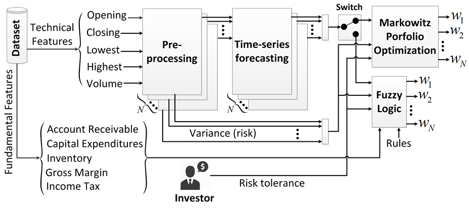

I am currently a graduate researcher at CST Lab. My research interests lie at the intersection of statistical learning and social science (particularly economics). Currently, I am working on a dynamic programming algorithm named the message-passing decoding which is based on belief propagation for finding the most likely sequence of transmitted signals.
I received my bachelor degree in Electrical Engineering and a minor degree in economics at the Sharif University of Technology. I am a master’s student in Electrical and Computer Engineering at the University of Waterloo doing research in statistical signal processing and information theory.
I was fortunate enough to spend my summer of 2016 working alongside Professor Chin Keong Ho at the Institute for Infocom Research, Singapore, generously supported by the Astar Scholarship .
If you have any questions, feel free to contact me at .
News
2019-03-01 Accepting student researchers at the Vector Institute.
2018-11-28 We organize the ICLR 2019 workshop on task-agnostic RL.
2018-09-05 STEVE paper accepted for oral presentation at NIPS 2018.
2018-04-12 Sim-to-real Minitaur paper accepted at RSS 2018.
2018-02-16 Guest lecture at Stanford CS 20 on Variational Inference in TF.
Selected research
Please see my Scholar profile for a full list including article links.
- 
Short biography
Danijar Hafner is a PhD student at the University of Toronto supervised by Jimmy Ba and a student researcher in Geoffrey Hinton’s team at Google Brain. His research focuses on unsupervised learning and reinforcement learning, specifically on building agents that learn without rewards. Danijar obtained his MRes at the University College London and Gatsby Unit under the supervision of Timothy Lillicrap and Karl Friston. Danijar co-authored the book “TensorFlow for Machine Intelligence” and advises Stanford’s course “TensorFlow for Deep Learning Research”. He completed his bachelor’s thesis on deep reinforcement learning for the video game Doom at the Hasso Plattner Institute, Germany.
Links
Twitter · Github · Quora · LinkedIn · Google AI · ORCID